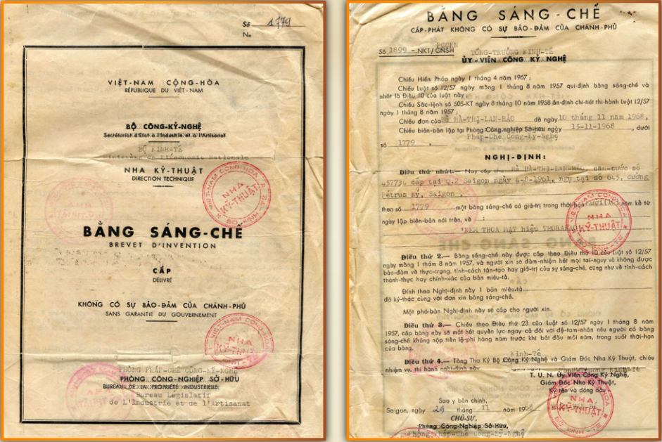

Câu chuyện về Thorakao bắt đầu từ năm 1957, tại một cơ sở chế biến hóa mỹ phẩm nhỏ mang tên Lan Hảo do bà Lan Hảo sáng lập. Với tầm nhìn về tiềm năng của các nguyên liệu tự nhiên, bà đã đặt những viên gạch đầu tiên cho một đế chế mỹ phẩm dựa trên đạo đức kinh doanh và sự trân trọng thảo mộc.
Đến tháng 3 năm 1961, Công ty Lan Hảo chính thức thành lập và thương hiệu Thorakao ra đời. Tên gọi này được ghép từ ba yếu tố đầy ý nghĩa: "Tho" là thiên thần, "Ra" là sự rạng rỡ và "Kao" gợi nhắc đến kem dưỡng — với hàm ý giúp người dùng trở nên tươi sáng như thiên thần.
Ba âm tiết ghép từ "Tho" (thiên thần), "Ra" (rạng rỡ) và "Kao" (kem dưỡng) — đặt tên vào tháng 3/1961, cùng với sự ra đời chính thức của Công ty Lan Hảo.
Nền tảng khoa học, không chỉ kinh nghiệm dân gian.
Khác biệt với các đối thủ cùng thời, Thorakao không chỉ dựa vào kinh nghiệm dân gian mà sớm chú trọng vào nền tảng khoa học thực nghiệm. Minh chứng cho năng lực này chính là bằng sáng chế đầu tiên được cấp vào năm 1968, khẳng định vị thế dẫn đầu trong việc nghiên cứu và chế tạo sản phẩm mới tại Việt Nam.

Cột mốc khẳng định Thorakao là một trong những thương hiệu đi đầu về nghiên cứu và chế tạo mỹ phẩm mới tại Việt Nam — không chỉ dừng lại ở công thức truyền miệng.
Với triết lý "Mỹ phẩm thật cho vẻ đẹp bền lâu", hãng đã khéo léo chắt lọc tinh hoa từ các nguyên liệu bản địa như nghệ, bồ kết, vỏ bưởi và mật ong để tạo nên những sản phẩm "quốc dân" gắn liền với ký ức của nhiều thế hệ người Việt.
Thăng trầm, và một lời từ chối.
Hành trình của Thorakao không thiếu những thăng trầm khi đối mặt với làn sóng xâm nhập của các tập đoàn đa quốc gia sau thập niên 1990. Dù có lúc phải chấp nhận làm gia công để duy trì doanh số, Thorakao vẫn giữ cho mình một tâm thế kiêu kỳ như một "cô gái đẹp".
Điển hình là vào năm 2013, Tiến sĩ Huỳnh Kỳ Trân đã kiên quyết từ chối lời đề nghị mua lại thương hiệu với giá 30 triệu USD, bởi ông xem đây là tài sản quý báu của gia đình và dân tộc cần được gìn giữ cho con cháu.
Bốn công thức đầu tiên của Thorakao+ giữ nguyên nguyên liệu bản địa từ di sản này — đổi lại bao bì và trải nghiệm mua sắm.
Xem sản phẩm